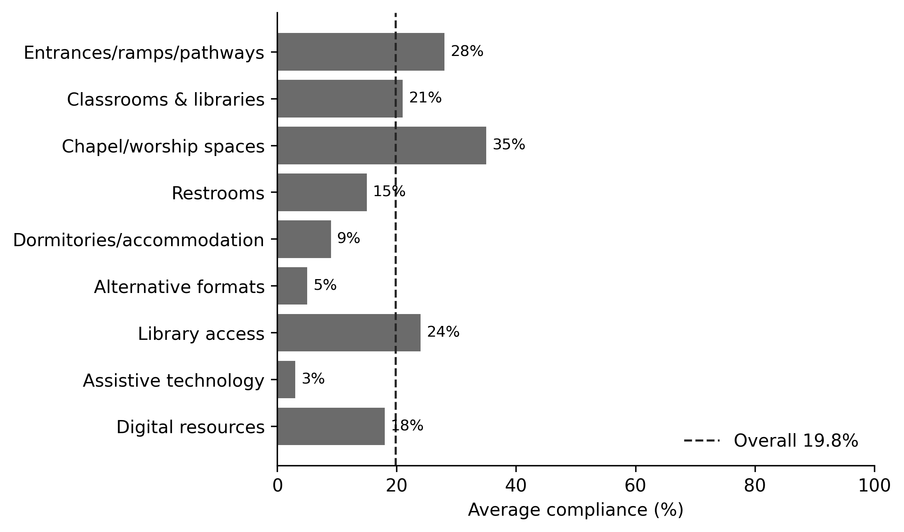
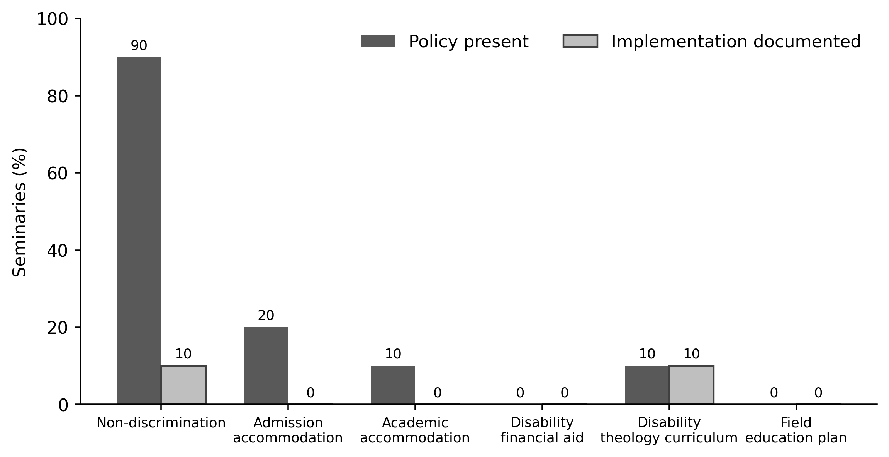

PIONEER PUBLICATION · ACCEPTED ARTICLE · ORIGINAL RESEARCH ARTICLE · SETEHEM: EDUCATION × HUMANITIES & SOCIAL SCIENCES × DISABILITY STUDIES
When Policy Does Not Open the Door: Physical Accessibility and Disability-Inclusion Governance in Anglican Seminaries in Nigeria
UKULE, Peter¹* · NNAJI, Charles Ogundu¹ · KEHINDE, Adeola¹
¹Department of Christian Studies and Religious Communication, University of Abuja, Abuja, Nigeria
Corresponding author: rev.ukulepeter@gmail.com
Article | Volume/Issue | Published | ISSN | DOI |
|---|---|---|---|---|
e013 | 1(1) | August 2026 | Pending assignment | Pending registration |
DOI: Pending registration. This local production copy is not a public version of record until DOI registration and journal-release checks are complete.
Abstract
Background: Formal non-discrimination language can coexist with material and procedural barriers that make theological education inaccessible.Objective: This study examined the physical, educational, technological and policy conditions affecting access for persons with physical disabilities in sampled Anglican seminaries in Nigeria.Methods: The article reports the institutional strand of a post-defence harmonised sequential explanatory mixed-methods Ph.D. study. Seminary Accessibility Assessment Tool (SAAT) audits and Seminary Policy Analysis Matrix (SPAM) reviews were completed at 10 seminaries in five geopolitical zones. The SAAT assessed entrances, learning spaces, worship, sanitation, residence, alternative formats, library access, assistive technology and digital resources; SPAM assessed whether inclusion commitments were present and whether implementation mechanisms were documented.Results: Overall SAAT accessibility was 19.8%. The highest domain was chapel/worship access (35%), while dormitory/accommodation access was 9%, alternative formats 5% and assistive technology 3%. Nine of 10 seminaries had a general disability non-discrimination statement, but only one showed systematic implementation. Admission accommodation policies were present in 20% of institutions but had no documented implementation; academic accommodation was present in 10% with no documented implementation; no institution documented disability-specific financial aid or a field-education accessibility plan.Conclusion: The dominant institutional problem was not a lack of declaratory commitment but a governance gap between statement, procedure, budget, responsibility and remedy. Accessibility should be treated as a core quality standard of ministerial formation, supported by annual audits, phased universal-design investment and enforceable accommodation processes.
Keywords: seminary accessibility; disability inclusion; Anglican theological education; reasonable accommodation; policy implementation; universal design; Nigeria
1. Introduction
Access to theological education is often discussed as a matter of admissions, yet admission is only the first institutional gate. A student may be formally admitted and still be excluded by steps at the entrance, inaccessible sanitation, residential spaces that require constant assistance, inaccessible learning materials, or the absence of any procedure for requesting reasonable accommodation. The built environment and the policy environment therefore operate together.
Disability-justice scholarship treats access as a matter of institutional design rather than individual resilience. Barton (2021) argues that theological education must move beyond case-by-case accommodation toward structural access, while Carter et al. (2023) show that participation in religious communities is shaped by both physical accessibility and congregational attitudes. The human-rights model likewise locates responsibility in the removal of barriers and the provision of equal participation rather than in the correction of the person (Degener, 2016).
In Nigeria, seminaries occupy a distinctive position because they combine academic study, residential life, worship, spiritual formation and field placement. A barrier in any one of these domains can interrupt ministerial formation. This article therefore treats accessibility as a system of interdependent physical, technological and governance conditions.
1.1 Aim
The aim was to quantify the accessibility of sampled Anglican seminaries and examine whether formal disability-related policy commitments were accompanied by documented implementation mechanisms.
2. Analytical framework: access as institutional quality
The analysis uses a simple governance proposition: a credible inclusion commitment requires at least five linked elements—standard, responsible owner, procedure, resource and remedy. A non-discrimination statement supplies only the standard. Without a named decision process, budget or responsible office, applicants and students remain dependent on discretionary goodwill. This is especially risky in residential and ministerial formation settings, where needs may involve transport, worship participation, library access, field education and placement.
Universal-design thinking complements this governance approach by asking whether environments are designed for human diversity from the outset. Reasonable accommodation remains necessary because no universal design can anticipate every individual need, but it should operate as a predictable institutional process rather than an improvised favour.
3. Materials and Methods
3.1 Institutional sample
The realised institutional sample comprised 10 Anglican seminaries across five geopolitical zones. This post-defence correction is important: the institutional evidence should not be represented as six-zone coverage. The 10 institutions nevertheless provided a diverse multi-site basis for comparing access conditions and policy practice.
3.2 Seminary Accessibility Assessment Tool
The SAAT was used to assess physical infrastructure, educational resources and technological provisions. Domains reported in the accepted results included entrances/ramps/pathways, classrooms and libraries, chapel/worship spaces, restrooms, dormitories/accommodation, alternative formats, library access, assistive technology and website/digital-resource accessibility. Domain results were summarised as average compliance percentages, with an overall institutional mean.
3.3 Seminary Policy Analysis Matrix
SPAM reviewed policy presence and documented implementation for disability non-discrimination, admission accommodation, academic accommodation, financial aid for disability needs, curricular inclusion of disability theology and field-education accessibility. The distinction between policy presence and implementation was retained because a statement without an operative mechanism does not establish that students can obtain accommodation in practice.
Table 1. Institutional measures and decision questions.
Instrument | Domain | Decision question |
|---|---|---|
SAAT | Physical, educational and technological access | Can a student enter, live, learn, worship and use institutional resources with reasonable independence? |
SPAM | Formal policies and implementation | Is inclusion documented as a procedure with operational mechanisms rather than a general statement? |
4. Results
4.1 Physical, educational and technological accessibility
The overall SAAT score was 19.8%, indicating low accessibility across the audited domains. Chapel and worship spaces recorded the highest reported compliance at 35%, followed by entrances/ramps/pathways at 28% and library access at 24%. Classrooms and libraries were 21% compliant and digital resources 18%. Sanitation and residential conditions were particularly weak: restrooms scored 15% and dormitories/accommodation 9%. Resources relevant to students with sensory impairments were lowest, with alternative formats at 5% and assistive technology at 3%.

Figure 1. SAAT accessibility domain scores across the 10 sampled seminaries. The dashed line marks the overall institutional mean of 19.8%. Source: post-defence harmonised thesis results.
Table 2. SAAT domain results.
Accessibility domain | Average compliance |
|---|---|
Entrances/ramps/pathways | 28% |
Classrooms & libraries | 21% |
Chapel/worship spaces | 35% |
Restrooms | 15% |
Dormitories/accommodation | 9% |
Alternative formats | 5% |
Library access | 24% |
Assistive technology | 3% |
Digital resources | 18% |
Overall accessibility | 19.8% |
4.2 Policy presence versus implementation
The policy analysis revealed a sharper governance problem. A disability non-discrimination statement was present in 90% of institutions, but systematic implementation was documented in only 10%. Admission accommodation procedures were present in 20% and academic accommodation in 10%, yet neither category showed documented implementation. No institution had a disability-specific financial-aid mechanism or a field-education accessibility plan. Disability theology appeared in the curriculum of one institution, which was also the only category in which presence and implementation were both recorded at 10%.

Figure 2. Policy presence and documented implementation in the Seminary Policy Analysis Matrix. Source: post-defence harmonised thesis results.
Table 3. SPAM results.
Policy area | Policy present | Implementation documented |
|---|---|---|
Non-discrimination | 90% | 10% |
Admission accommodation | 20% | 0% |
Academic accommodation | 10% | 0% |
Disability financial aid | 0% | 0% |
Disability theology curriculum | 10% | 10% |
Field education plan | 0% | 0% |
5. Discussion
The combination of a 19.8% overall accessibility score and a 90%/10% statement-to-implementation gap is analytically more significant than either result alone. It shows that institutional exclusion is both material and administrative. Low physical access constrains what students can do; weak policy implementation constrains whether they have a predictable route to request change. Together they create a system in which inclusion depends on individual negotiation.
Barton’s (2021) disability-justice framework is useful because it treats access as a matter of institutional responsibility rather than benevolence. A step-free entrance is not an optional courtesy to an individual wheelchair user; it is part of the institutional capacity to educate a diverse student body. The same reasoning applies to accessible sanitation, dormitories, digital resources and field education. In a seminary, these are not ancillary services. Residential life, worship and supervised ministry are integral to formation.
The policy findings also show why non-discrimination language should not be treated as evidence of inclusion by itself. A statement may articulate a moral norm, but students still need to know who receives an accommodation request, what evidence is required, who decides, what can be appealed, how costs are met and how confidentiality is protected. Without those mechanisms, inclusion remains dependent on personality and local goodwill.
5.1 From audit to reform
The post-defence implementation matrix in the parent study provides a practical sequence. A church-level disability-inclusion standard should establish the baseline; every seminary should be audited; admissions and reasonable-accommodation procedures should be published; built-environment improvements should be phased and budgeted; faculty should receive disability-theology and inclusive-pedagogy formation; and disabled students and alumni should participate in review structures. The important principle is that responsibility is shared but not diffused.
5.2 Priority setting under resource constraints
Low-resource institutions may be unable to retrofit every facility immediately, but scarcity does not justify procedural absence. Priority should begin with life safety, basic routes, sanitation, sleeping accommodation, chapel/classroom access and a clear accommodation process. Annual SAAT-style self-assessment can then track improvement. Capital projects should apply universal-design criteria at the design stage because retrofitting is usually more expensive than accessible construction from the outset.
6. Limitations
The results describe 10 sampled seminaries in five geopolitical zones and should not be interpreted as a census of all Anglican theological institutions in Nigeria. The SAAT and SPAM findings are institutional summaries and do not establish causal effects on admission, retention or ordination outcomes. The article also does not rank named institutions; publication is intentionally aggregate to protect institutional and participant confidentiality and to emphasise system reform rather than reputational comparison.
7. Conclusion
The sampled Anglican seminaries displayed a substantial access deficit. The central institutional finding is the coexistence of declaratory inclusion with weak operational capacity: general non-discrimination language was common, but documented procedures, budgets and accessibility resources were rare. A seminary becomes accessible not when it expresses goodwill but when a person can enter, live, learn, worship, request accommodation, participate in placement and obtain remedy through ordinary institutional processes. Accessibility should therefore be treated as a quality standard of theological education and a visible expression of ecclesial responsibility.
Declarations
Table. Publication declarations and research-integrity information.
Declaration | Statement |
|---|---|
Study provenance | Institutional-access paper derived from the post-defence harmonised Ph.D. thesis of Peter Ukule. |
Confidentiality | Results are aggregated across institutions; the article does not publish institution-specific scores or identifiable participant material. |
Data availability | Aggregate SAAT and SPAM results are reported in the thesis. Underlying institutional records remain subject to the parent study’s confidentiality and data-management conditions. |
Authorship | Peter Ukule led the doctoral research; Charles Ogundu Nnaji and Adeola Kehinde supervised the study and are co-authors of this focused article. |
References
Barton, S. J. (2021). Access and disability justice in theological education. Journal of Disability & Religion, 25(3), 279–295.
Braun, V., & Clarke, V. (2022). Thematic analysis: A practical guide. SAGE.
Carter, E. W., et al. (2023). Addressing accessibility within the church: Perspectives of people with disabilities. Journal of Religion and Health, 62(4), 2474–2495.
Creswell, J. W., & Creswell, J. D. (2022). Research design: Qualitative, quantitative, and mixed methods approaches (6th ed.). SAGE.
Degener, T. (2016). Disability in a human rights context. Laws, 5(3), 1–24.
Eiesland, N. (1994). The disabled God: Toward a liberatory theology of disability. Abingdon Press.
Hauerwas, S. (2004). Suffering presence: Theological reflections on medicine, the mentally handicapped, and the church. University of Notre Dame Press.
McMahon-Panther, G., & Bornman, J. (2025). Persons with disabilities in the Christian Church: A scoping review on the impact of expressions of compassion and justice on their inclusion and participation. Journal of Disability & Religion, 29(1), 81–108.
Swinton, J. (2012). From inclusion to belonging: A practical theology of community, disability and humanness. Journal of Religion, Disability & Health, 16(2), 172–190.
Tagwirei, K. (2024). Enabling abilities in disabilities: Developing differently abled Christian leadership in Africa. Theologia Viatorum, 48(1), 252.
World Council of Churches. (2003). A church of all and for all: An interim statement. WCC Publications.
Yong, A. (2011). The Bible, disability, and the church: A new vision of the people of God. Eerdmans.
Hardwick, J., & Whittington-Walsh, F. (2023). Accessible admissions: Fostering equitable, accessible, and inclusive admissions through disability justice. British Columbia Council on Admissions and Transfer.
Olusegun, A. (2019). The Disability Act 2018 and the rights of persons with disabilities in Nigeria: A critical analysis. Nigerian Journal of Law and Policy, 4(2), 28–47.
Shaw, A. (2024). Inclusion of disabled higher education students: Why are we not there yet? International Journal of Inclusive Education, 28(6), 820–838.
Publication Record
Article metadata.
Field | Record |
|---|---|
Article identifier | e013 |
Manuscript category | Original Research Article |
Parent study | Ukule, Peter. Ph.D. in Christian Theology, University of Abuja, February 2026; post-defence harmonised copy. |
Journal | CHIATECH JOURNAL SETEHEM, Volume 1, Issue 1 |
Publication month | August 2026 |